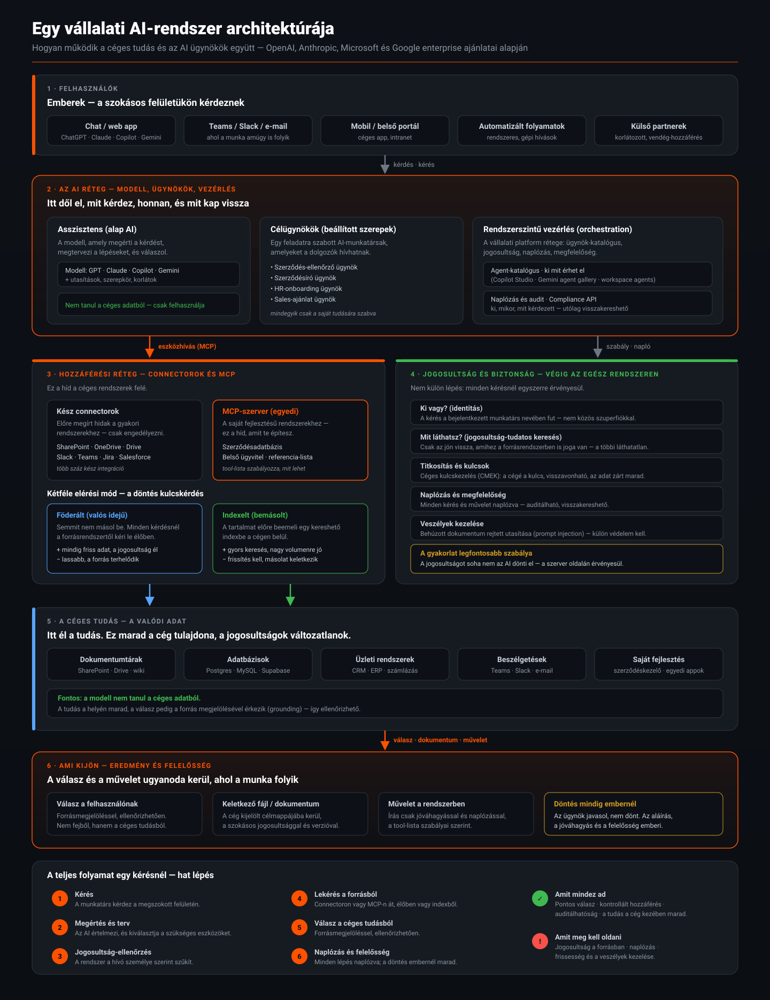

Ez az oldal a nagy képet mutatja meg: hogyan kapcsolódik össze a felhasználó, az AI réteg, a céges rendszerek és a jogosultság. Alább a teljes architektúra-ábra, majd azok a kockázatok, amelyeket minden bevezetésnél át kell gondolni.
A hat réteg, amelyen egy kérés végigmegy — a felhasználótól a céges tudásig és vissza.

A technológia készen van — a buktatók a szervezeti és megfelelőségi oldalon vannak.
A retrieval csak akkor biztonságos, ha a forrásrendszer jogosultságai pontosan átkerülnek az indexbe. Rossz mappamegosztás a forrásban automatikusan rossz AI-választ eredményez — az AI nem javítja, hanem felnagyítja a meglévő hibát.
Ha egy egyéni connector egyetlen API-kulccsal működik, mindenki azt látja, amit az a kulcs lát. Ez a leggyakoribb adatszivárgási pont.
A behúzott céges dokumentum maga is tartalmazhat rosszindulatú utasítást. A „csak megbízható forrás” elv és a forrás-korlátozás csökkenti a kockázatot.
EU-s cégeknél nem mindegy, hol tárolódik az index. Az előírásoknak megfelelő régiót (EU) és saját kulcskezelési módot előre rögzíteni kell.
Az indexelt tudás jobb keresést ad, de elavulhat; a federált mindig friss, de gyengébb találatokat hozhat. A helyes választás forrásonként eltérő lehet.
Ugyanaz az információ több helyen, eltérő változatban. Az OpenAI kifejezetten erre épített többkereséses feloldást — de a rendezett tudásbázis hosszú távon mindenhol alapkövetelmény.